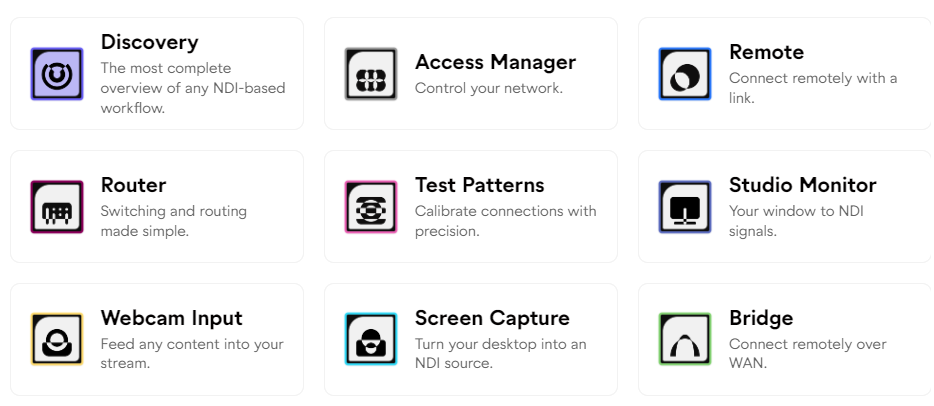
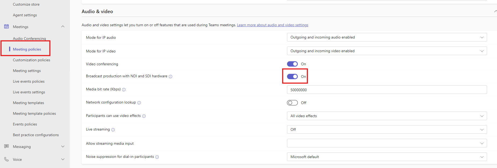
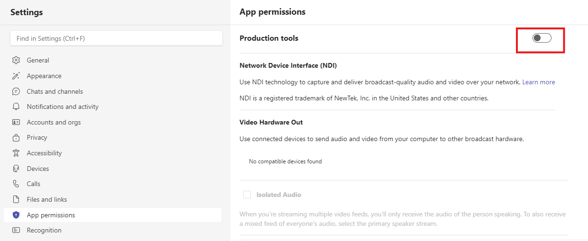

NDI Tools: The Unsung Hero of Video Production

Some tools change everything without anyone noticing. NDI is one of those tools. It quietly revolutionized how video moves around a production environment, and most people outside the broadcast world have never heard of it.
Let me tell you about the unsung hero of video production.
A Brief History
Back in 2015, NewTek quietly released something called NDI (Network Device Interface). The idea was simple but revolutionary: what if you could send broadcast-quality video and audio over a standard ethernet network instead of expensive SDI cables and capture cards?
No proprietary hardware. No expensive infrastructure. Just IP.
They made the protocol open. They released free tools. And then... they just let it spread. No massive marketing campaigns. No hype cycles. It just worked, and people started using it.
It's Everywhere Now
Here's the thing about NDI. It's been quietly integrated into almost everything:
- OBS - Free plugin, turns OBS into an NDI source or lets you receive NDI inputs
- Microsoft Teams - Built-in NDI output for broadcast production
- Adobe Premiere & After Effects - Native NDI support
- Zoom - NDI output available
- vMix, Wirecast, TriCaster - Full NDI integration
Once you enable NDI, everything on your network can talk to everything else. Your laptop becomes a video source. Your phone becomes a camera. Your Teams call becomes ingestible into your production switcher.
Teams NDI: The Game Changer for Hybrid Production
This is the one that changed everything for us. Microsoft Teams has NDI built in, which means you can pull individual video feeds from a Teams call directly into your production environment.
Remote guests? Their camera feed comes in as a clean NDI source. Screen shares? NDI. The possibilities for hybrid events are massive.
How to Enable Teams NDI (Organization)
If you're on an M365 Business account, your IT admin needs to enable NDI at the policy level. This is done in the Teams Admin Center under Meeting policies → Audio & video:

Key settings:
- Broadcast production with NDI and SDI hardware: Turn this ON
- Media bit rate: Set to 5,000,000 Kbps (5 Gbps) for high quality video
Full instructions from Microsoft: Use NDI in Microsoft Teams meetings
How to Enable Teams NDI (Personal)
For personal accounts, you can enable NDI in your Teams settings under App permissions → Production tools:

Check out Microsoft's full guide: Broadcasting audio and video from Microsoft Teams with NDI
Once enabled, you can ingest camera feeds, audio, and screen shares from any Teams meeting directly into your switching environment. Whether that's a NewTek TriCaster, OBS, vMix, or any other NDI-enabled production software.
The Free NDI Tools Suite
NewTek (now part of Vizrt) releases a completely free suite of NDI tools. Not "free trial." Not "free with watermark." Actually free. Here's what you get:
NDI Studio Monitor
Preview any NDI source on your network. Just open it, and it automatically discovers every NDI feed available. Essential for monitoring.
NDI Screen Capture
Turn any display or window on your computer into an NDI source. Share your screen to any NDI-enabled device on your network without any additional hardware.
NDI Virtual Input
Makes any NDI source appear as a webcam to your system. Want to use your production camera as your Zoom camera? Done.
NDI Webcam Input
The reverse of Virtual Input. Turns your webcam into an NDI source that any device on the network can access.
NDI Test Patterns
Generate test patterns as NDI sources. Useful for testing and calibration.
The Hidden Gem: NDI KVM
This one doesn't get enough love. NDI includes a free KVM (keyboard/video/mouse) switch built right in.
If you're like me and have multiple computers at your desk, you know the cable nightmare of traditional KVM switches. NDI KVM lets you control multiple computers with a single keyboard and mouse over the network. No extra hardware. No cables. Just move your mouse to the edge of one screen and it jumps to the next computer.
It's the kind of feature that seems minor until you use it daily. Then you can't live without it.
Give It The Credit It Deserves
NDI doesn't have a marketing team generating buzz. There's no viral demos on social media. It just quietly revolutionized how we move video around, and it did it for free.
Sometimes the most valuable tools are the ones that just work. NDI is one of those tools.
Download the free tools at ndi.video/tools and see for yourself.